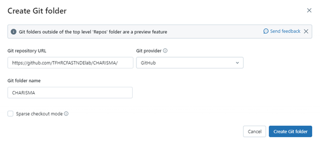

Databricks
Databricks is a user-friendly platform for working with large datasets. It is like a shared space where people who analyze data and those who work with it can all collaborate. Built on Apache Spark and hosted in the cloud, Databricks offers convenient access from anywhere. It features useful tools like collaborative notebooks for writing and sharing, task scheduling, and data exploration capabilities. Designed to streamline the entire data analytics process, Databricks covers everything from data preparation to model training and deployment. Plus, it supports various programming languages such as Python, SQL, R, and Scala, and seamlessly integrates with popular machine learning and data visualization tools.
CHARISMA can be utilized on Databricks. This method clones (copies) the original CHARISMA GitHub contents and save it into your workspace. Thus, users are free to modify, add, or remove the codes and data. Also, all the necessary Python packages are automatically installed, eliminating the need for users to install anything themselves.
Log in into Databricks.
URL: https://dbc-76d86e80-ff34.cloud.databricks.com/
Click Workspace.
{kind=link}
Click Create on the right top blue panel and click Git folder.
{kind=link}
4. Paste the following address into the “Git repository URL”: https://github.com/TFHRCFASTNDElab/CHARISMA/ Then the Git provider and Git folder name will be automatically filled.
{kind=link}
Click Create Git folder.
Click the branch icon with “main”.
{kind=link}
Click “Branch: main” and change it as DataBricks.
{kind=link}
Exit the white screen after confirming the branch has set with Databricks.
{kind=link}
Click ground-penetrating-radar, docs, Rebar mapping, and notebooks.
{kind=link}
Click one of the notebooks, and type in your DOT email address, to specify the directory path.
{kind=link}
Request a computational resource by clicking Connect, and click Run all.
{kind=link}